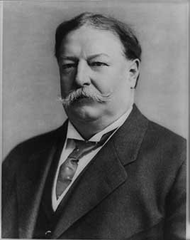

This presidency falls in the realignment era (1896–1932), when the two parties were trading positions and both had progressive and conservative wings.
Theodore Roosevelt's hand-picked successor. He brought about 80 antitrust suits, more than Roosevelt, including the case that broke up Standard Oil, and backed the 16th Amendment (income tax) and the 17th (direct election of senators). A tariff fight and the Ballinger–Pinchot affair split his party, and Roosevelt ran against him in 1912. He later became chief justice, the only person to hold both jobs.
Shaded areas show the years in office, with a few years before and after for comparison. Budget years ran July to June until 1976 (now October to September), so each year's figures cover parts of two calendar years.
June 30, 1908 (end of fiscal 1908): $2.63 billion → June 30, 1912 (end of fiscal 1912): $2.87 billion
Daily debt figures don't exist before 1993, so Taft's numbers use the fiscal years closest to his term, the same rule as every other page.
Debt as a share of GDP. Above 100% means the debt is bigger than a year of everything the country produces.
Money borrowed each budget year (below the line) or paid down (above).
1909: 5.2% → 1912: 5.2%. Yearly averages; monthly figures begin in 1948. Estimates by economist Stanley Lebergott.
How much prices rose each year (consumer price index).
What everyday prices and paychecks did while in office.
Prices use the consumer price index (MeasuringWorth). The minimum wage is the federal rate set by Congress.
724 orders. Count from the American Presidency Project. Many withdrew public land from sale.
Yearly counts aren't reliable for this era. Orders were not numbered until 1907, when the State Department numbered the ones already in its files, and many orders were never numbered at all, so only the total is shown.
Source: American Presidency Project: executive orders (full list of every order).
Pulled about 3 million acres of oil land in California and Wyoming from private claims, without specific authority from Congress. The Supreme Court upheld it in 1915.
Federal RegisterPut about 36,000 fourth-class postmasters under civil service protection, ending them as patronage jobs.
Federal RegisterIncomplete: orders before 1929 were not numbered or collected consistently. This archive has 75 of the roughly 724 orders counted for this president.
Source: Executive Orders Archive, compiled from the American Presidency Project and the Federal Register. Topics are the archive's automated tags; "Revoked" and similar labels come from the Federal Register's records.
A pardon wipes out the punishment for a federal crime; a commutation shortens a sentence but leaves the conviction. Counts are by federal fiscal year (July to June). The Justice Department counts fiscal 1909, including Taft's first four months, under Roosevelt, and all of fiscal 1913, including Wilson's first four months, under Taft.
Source: U.S. Dept. of Justice, clemency statistics, which lists every recipient with the crime and sentence.
The crime: Misusing funds of the Bank of North America (convicted 1908)
Sentence: 15 years; served about two
Why it drew attention: The shipping magnate was freed after Army doctors said he was dying. Reports later said he had faked the illness; he lived until 1933.
SourceThe same checklist for every president. Tap a row for details and sources.
No articles of impeachment were voted on.
Never charged.
No member of his cabinet or White House staff was convicted.
None were appointed. A joint committee of Congress investigated the Ballinger–Pinchot affair in 1910.
No official investigation found he used these agencies against opponents.
What happened, what was proven, and how it ended.
Taft fired the chief forester after he accused the interior secretary of helping private interests take Alaska coal lands. Hearings revealed that a memo Taft cited to clear Ballinger had been written after the fact and dated earlier; Taft acknowledged it.
Outcome: A committee majority cleared Ballinger. The fight split Republicans and helped drive Roosevelt's 1912 challenge.
SourceTaft promised to lower tariffs but signed a bill that cut them only slightly, then called it the best tariff bill his party ever passed.
Outcome: Progressive Republicans turned against him; Democrats won the House in 1910.
SourceTaft sent about 2,000 Marines to prop up a government friendly to U.S. banks, part of his 'dollar diplomacy'.
Outcome: U.S. forces stayed, with one short break, until 1933.
SourceHis antitrust suit against U.S. Steel cited its 1907 purchase of a rival, which Roosevelt had approved, and Roosevelt took it as a personal attack.
Outcome: The Supreme Court ruled for U.S. Steel in 1920; the break with Roosevelt became permanent.
SourceWidely quoted remarks, with the context they were said in.
I think the Payne bill is the best bill that the Republican party ever passed.
Even a rat in a corner will fight.